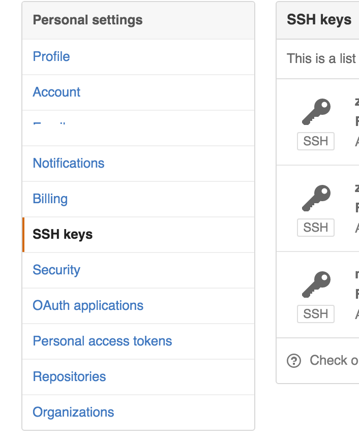

pm2 是一个带有负载均衡功能的Node应用的进程管理器.
当你要把你的独立代码利用全部的服务器上的所有CPU，并保证进程永远都活着，0秒的重载， PM2是完美的。
可以感受一下官方的部署文档示例，
github项目地址。
主要的特点:
- 内建负载均衡（使用Node cluster 集群模块）
- 后台运行
- 0秒停机重载，我理解大概意思是维护升级的时候不需要停机.
- 具有Ubuntu和CentOS 的启动脚本
- 停止不稳定的进程（避免无限循环）
- 控制台检测
- 提供 HTTP API
- 远程控制和实时的接口API ( Nodejs 模块,允许和PM2进程管理器交互 )
pm2部署简单应用
安装pm2
|
|
使用pm2部署简单的项目
|
|
pm2 start app.js : 使用pm2启动app.js
-i 0 : 使用最大进程数启动
–name : 指定一个你喜欢的名字
–watch : 开启监视模式，如果代码有变动pm2自动重启
查看pm2部署
|
|
大概就这样子:
pm2自动部署远程服务器
目前我们部署服务器的方式是使用oschina托管项目，然后在服务器中安装git将项目克隆到服务器中，然后
使用pm2部署项目，如果项目有任何的修改，就会需要跑到几个服务器中pull代码，然后pm2 reload项目，
蛋疼的要死。
现在就使用pm2的远程部署方式，解决这个蛋疼的问题！
准备工作
将本地机器和线上服务器建立ssh信任，免密码登陆
- 生成git ssh公钥(本地机器和服务器操作一样)
|
|
连续三次回车,这样生成的ssh公钥添加到github
像这样:

- 查看生成的ssh公钥
|
|
理论上已经生成ssh公钥,在用户主目录下的.ssh中生成的id_rsa.pub就是生成的公钥
authorized_keys文件是通过授权的ssh公钥，在使用ssh协议进行远程访问的时候，如果该机器的ssh公钥在
这个文件中，那么能直接进行访问
- 将ssh公钥拷贝到服务器
|
|
执行这个命令是将本地的id_rsa.pub拷贝到服务器的.ssh／目录下并命名为authorized_keys
这样就能不需要密码访问远程服务器了
上一步已经将服务器的ssh公钥添加到 github 中了，这样服务器中clone项目也不需要密码
pm2配置文件ecosystem.json
|
|
- user : 你登陆到远程主机的用户名
- host : 服务器的ip地址
- ref : 部署的分支
- repo : github或oschina中托管的地址
- path : 部署到服务器的目录
- post-deploy : 部署时的命令
执行部署
- 首次在服务器中部署（服务器中没有需要部署的项目，需要将代码克隆到服务器）
|
|
上面命令是将项目从github或oschina中克隆到指定path中，需要注意一下的是，pm2 将目录结构分为 :
|current | shared |source |
- 克隆好之后执行安装和启动
|
|
官方推荐在部署的项目中也使用ecosystem.json进行启动项目 ：
|
|
这个相对来说就简单了，就不一一说。
没有使用的原因是放在项目中在本地和服务器中使用需要来回修改启动目录。